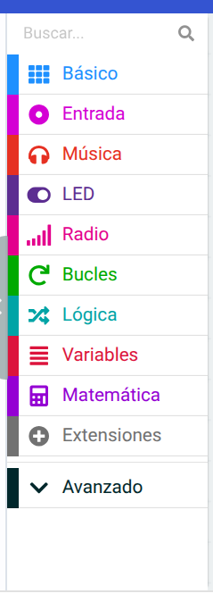
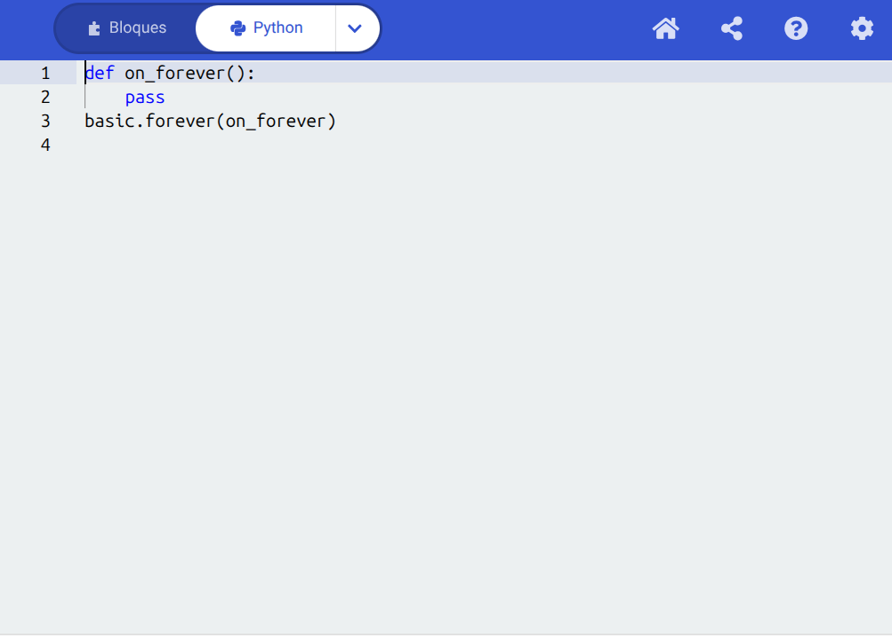

Usando la plataforma MakeCode
Usando la plataforma MakeCode
Para dar nuestros primeros pasos en la computación física y la programación de sistemas embebidos, no necesitamos instalar herramientas complejas ni configurar pesados entornos de desarrollo en nuestra computadora. Todo lo que requerimos está al alcance de un clic gracias a una de las herramientas educativas más potentes y accesibles del sector tecnológico actual.
¿Qué es Microsoft MakeCode?
Microsoft MakeCode es una plataforma de aprendizaje en línea, gratuita y de código abierto, desarrollada por Microsoft para acercar la programación y la robótica a estudiantes de todas las edades. Su magia radica en su enfoque dual y en su versatilidad: permite programar utilizando un sistema visual de bloques (ideal para aprender la lógica inicial sin frustrarse por la sintaxis) y, al mismo tiempo, ofrece editores de texto basados en lenguajes profesionales.
Además, incorpora un simulador interactivo en tiempo real. Esto significa que a la izquierda de tu pantalla tendrás una reproducción digital exacta de la micro:bit que reaccionará inmediatamente a las líneas de código que escribas, permitiéndote testear tus programas de manera segura y dinámica antes de transferirlos a una tarjeta real.
El punto de encuentro: ¿Cómo accedemos?
El entorno de MakeCode está completamente alojado en la nube, por lo que funciona directamente desde cualquier navegador web moderno (como Chrome, Edge o Firefox). Para ingresar al entorno específico diseñado para nuestra tarjeta, solo debes escribir o hacer clic en el siguiente enlace oficial:
Enlace de acceso: https://makecode.microbit.org/
Al cargar la página, te encontrarás con la pantalla de inicio o "Dashboard", donde podrás visualizar tus proyectos recientes, acceder a plantillas preconfiguradas y explorar una gran cantidad de tutoriales guiados.
Cuentas y guardado: ¿Cómo loguearnos?
Una de las dudas más comunes al empezar es si es obligatorio registrarse para usar la plataforma. La respuesta corta es no. MakeCode es sumamente noble y guarda de forma automática todos tus progresos en el almacenamiento local (caché) de tu navegador web. Si cierras la pestaña y regresas al día siguiente desde la misma computadora, tus proyectos seguirán allí.
Sin embargo, confiar ciegamente en la memoria del navegador es arriesgado (si borras el historial o las cookies, podrías perder tu trabajo). Por ello, es altamente recomendable loguearse. Para hacerlo de forma segura, sigue estos pasos:
Ubica la esquina superior derecha de la pantalla de inicio y haz clic en el botón de Iniciar sesión (Sign In) o en el ícono del engranaje/usuario.
La plataforma te ofrecerá la opción de conectarte utilizando una cuenta de Microsoft (como Outlook o Hotmail) o una cuenta de Google (Gmail).
Selecciona tu proveedor de preferencia, introduce tus credenciales habituales y otorga los permisos necesarios.
Al estar logueado, MakeCode sincronizará automáticamente todos tus proyectos en la nube. Esto te garantiza que tu código estará respaldado de forma segura y, además, te permitirá acceder a tus archivos y continuar programando desde cualquier otra computadora, ya sea en el liceo, en tu casa o en la biblioteca.

Uso básico de la interfaz y primer proyecto
Para comenzar a crear, haz clic en el botón grande que dice "Nuevo proyecto". Te saltará una pequeña ventana emergente pidiéndote que le asignes un nombre (por ejemplo, "MiPrimerCodigo"). Al presionar "Crear", ingresarás al editor principal, el cual se divide de forma muy intuitiva en tres grandes áreas:

El Simulador (Izquierda): Una réplica digital de la micro:bit. Cuenta con botones virtuales de reproducción, pausa y reinicio. Si programas la matriz para que muestre una carita feliz, la verás brillar aquí de inmediato.

La Caja de Herramientas o Categorías (Centro): Un menú organizado por colores y temáticas (Básico, Entrada, Música, Bucles, Lógica, Variables, etc.) que contiene todas las funciones y bloques que puedes utilizar.

El Área de Trabajo (Derecha): El lienzo gigante donde arrastrarás los bloques o escribirás tus líneas de código. De manera predeterminada, encontrarás dos estructuras iniciales: al iniciar (código que se ejecuta una sola vez al encender la placa) y para siempre (un bucle infinito que repite las instrucciones continuamente).

El salto fundamental a MicroPython
Aunque la plataforma inicia mostrando bloques de colores, este curso está enfocado en el desarrollo textual. Hacer la transición en MakeCode es sumamente sencillo. En la parte superior central de la pantalla verás un selector flotante que dice "Bloques / JavaScript / Python".

Al hacer clic sobre la opción "Python", todo tu espacio de trabajo se transformará de inmediato en un editor de texto profesional con numeración de líneas y autocompletado de código. La plataforma adaptará la sintaxis automáticamente para que trabajes directamente con MicroPython, permitiéndote escribir código real, gestionar sangrías (indentación) y experimentar el verdadero flujo de trabajo de un desarrollador de software mientras sigues disfrutando de los beneficios del simulador interactivo a la izquierda.